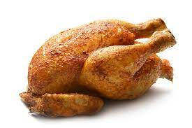

Perfectly Poached Chicken
Just what it sounds like—a simple, perfect way to poach plain, boneless, skinless chicken breasts.
This go-to recipe is ideal for weekend meal prepping!

Description
Plain, boneless, skinless chicken breasts poached in lightly-salted water are a moist,
tender culinary blank slate—elegant in their absolute simplicity.
Here’s how to make perfectly poached chicken.
How to Poach Chicken Breast:
Patience is the key to a perfect poached chicken breast. Here’s what you need to know:
Use a wide, shallow pan. Like this one.
- Begin by placing your raw, boneless, skinless chicken breasts in the pan.
- Cover with water. Add cold water to the pan and fill until the chicken breasts are fully submerged.
- Bring the water gently up to temperature over medium heat. Here’s where the patience comes in! Remember: low and slow=moist, tender poached chicken.
- Once you’ve reached a low simmer, reduce the heat. Turn the heat down to low and cover the pan.
Wait, again. About ten minutes.
- Check for doneness! You want an internal temp of 165°F. Once the chicken is done, take it off the heat.
- the chicken rest in its poaching liquid for a few minutes, if you’ve got the time. The capacity of meat to hold water actually increases as it cools.
As the chicken rests in the cooking liquid, it will reabsorb some of the moisture it released during cooking.
This means ultra-juicy, succulent poached chicken.